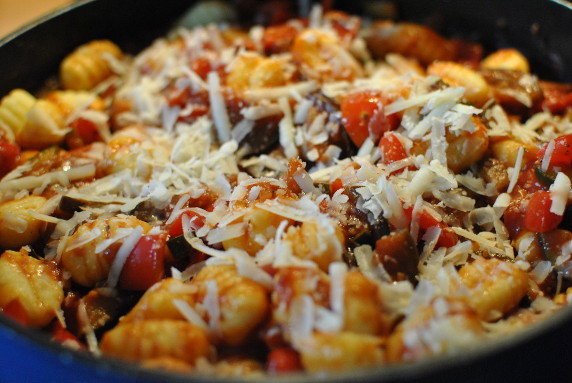

Gnocchi a la Ratatouille

- Vorbereitung: ca. 25 Minuten
- Zubereitung: ca. 30 Minuten
- Für 4 Personen
Zutaten
- 1 kleine Zucchini
- 1 kleine Aubergine
- 2 Paprikaschoten
- 200 g Kirschtomaten
- 2 rote Zwiebeln
- 2 Knoblauchzehen
- 2 Zweige Thymian
- 2 Zweige Oregano
- 3 EL Olivenöl
- 2 - 3 EL Balsamico-Essig
- 500 ml passierte Tomaten
- 500 g Gnocchi (Fertigprodukt)
- 40 g Grana Padano
Zubereitung
- Zucchini waschen, putzen, längs halbieren. Aubergine waschen, putzen, vierteln. Beides in etwa 1,5 cm große Stücke schneiden. Paprika halbieren, putzen, waschen, ebenfalls in 1,5 cm große Stücke schneiden. Tomaten waschen, putzen, halbieren. Zwiebeln
abziehen und in feine Würfel schneiden. Knoblauch abziehen und fein hacken. Thymian und Oregano von den Stielen zupfen, Blättchen fein hacken.
- Öl in einer großen Pfanne erhitzen, Knoblauch und Zwiebeln darin kurz anbraten. Vorbereitete Gemüse und Kräuter hinzufügen, unter Rühren etwa 5 Minuten mitbraten. Mit Salz und Pfeffer kräftig würzen, mit Essig ablöschen. Passierte Tomaten untermischen,
alles 20 Minuten ohne Deckel schmoren.
- Inzwischen Gnocchi nach Packungsangabe in kochendem Salzwasser garen, abgießen. Gnocchi zur Ratatouille geben, untermischen. Käse fein reiben, darüberstreuen.